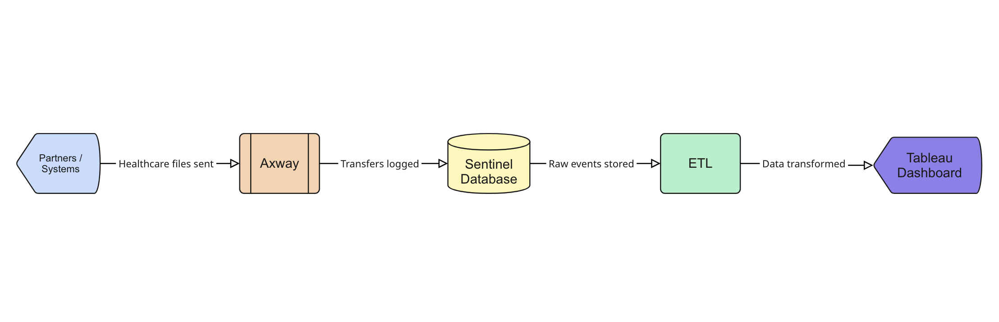

Healthcare Data Transfer Analytics – SQL, Python, Tableau
- Tech Stack: SQL, Python, Tableau, Axway/Sentinel
Business Problem
Elevance Health exchanges thousands of healthcare files daily (claims, eligibility, billing, etc.) through Axway. Each transfer creates an event trail, but business users had no easy way to track automations, SLA breaches, or failures.
Solution

I developed an end-to-end pipeline that transformed Axway/Sentinel logs into an automation catalog and operational KPIs, presented in a self-service Tableau dashboard.
Ingestion & Modeling: Queried Axway/Sentinel Databases using SQL, and applied Python (Pandas/NumPy) to clean and standardize fields. Created stable automation keys to group recurring flows.
Metrics Computation
- Success Rate = Completed / Total
- p95 Duration = typical worst-case time
- Backlog = aged or in-progress transfers
- Throughput = bytes/day trend
Visualization in Tableau
- Automation Catalog: searchable flow inventory with owners
- SLA Watchlist: spotlighting flows with potential SLA breaches
- Instances Table: transaction-level details
- Throughput Trends: volume patterns across partners
Impact
- This project empowered Elevance stakeholders to:
- Pinpoint failing or delayed file transfers in real time, reducing manual troubleshooting effort by 60%.
- Improve SLA adherence by 25%, minimizing partner escalations and ensuring timely processing of healthcare claims.
- Gain full transparency into over 500+ recurring automations, enabling business teams to quickly identify flow owners and resolve issues.
- Accelerate issue resolution time by 40% through real-time dashboards versus manual log reviews.
- Support operational efficiency by monitoring daily data throughput exceeding 2 TB/day of healthcare files.